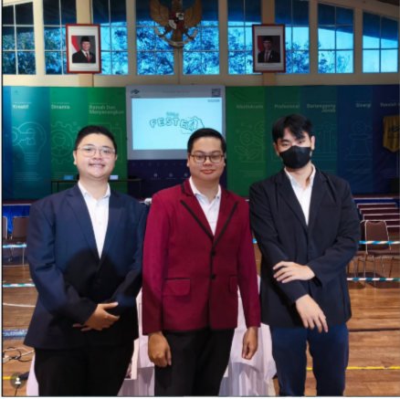

WELCOME
Rotaract adalah organisasi global yang menyatukan pemuda untuk menciptakan perubahan positif, mengembangkan keterampilan kepemimpinan, dan profesional melalui aksi pelayanan masyarakat.

Logo Club of Ma Chung University
Rotaract adalah organisasi global yang menyatukan pemuda untuk menciptakan perubahan positif, mengembangkan keterampilan kepemimpinan, dan profesional melalui aksi pelayanan masyarakat.
Logo Club of Ma Chung University
Menjadi organisasi kepemudaan yang unggul dalam pengabdian masyarakat, pengembangan kepemimpinan, dan membangun jaringan profesional yang berdampak positif secara lokal maupun global.
Menyelenggarakan berbagai kegiatan sosial dan kemanusiaan yang berkelanjutan sebagai bentuk kontribusi nyata kepada masyarakat, sekaligus mengembangkan kemampuan kepemimpinan, komunikasi, dan kerja sama antaranggota. Selain itu, organisasi ini berupaya membangun jejaring dengan berbagai pihak baik lokal maupun internasional untuk memperluas wawasan dan peluang, serta menanamkan nilai empati, integritas, dan tanggung jawab sosial. Melalui pelatihan, seminar, dan aktivitas organisasi, anggota juga didorong untuk terus mengembangkan potensi diri secara optimal.
Rotaract secara aktif menyelenggarakan berbagai program sosial seperti bakti sosial, donor darah, dan kampanye lingkungan.
Learn More →Pelatihan untuk meningkatkan kepemimpinan, komunikasi, dan kerja tim.
Learn More →
Crafted for Efficiency
Rotaract adalah organisasi kepemudaan yang berfokus pada pengembangan diri melalui kegiatan sosial, kepemimpinan, dan profesionalisme.
Bergabunglah bersama Rotaract dan jadilah bagian dari komunitas yang berdampak.